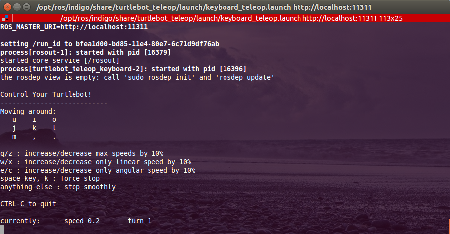
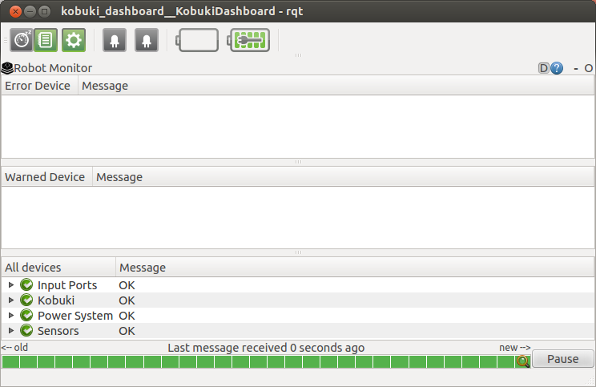

ID : turtlebot
PW : turtlebot
Hello fellow roboticist,
Welcome to the TurtleBot Quick Start Guide.
The TurtleBot is a low-cost, personal robot kit with open-source software. It can drive around your house, see in 3D, and has enough horsepower to help you build exciting applications. This guide provides a few tips and tricks for working with the TurtleBot and links to several online resource.
Thanks,
TurtleBot Development Team
Quick Start
Step 1: Setup network
The primary requirement for getting your TurtleBot running is that is needs to be connected to a network so that you can operate it remotely. You can use the Network Manager in the upper right corner of your screen to connect to a WiFi, Ethernet or cellular network.
After the network is started, ROS can be started from a terminal and then the laptop can be closed and placed in the TurtleBot.
Additionally, ROS_HOSTNAME and ROS_MASTER_URI environment variables in robot should be set to work with remote workstation. IP_OF_TURTLEBOT should be replaced of real ip address
> echo export ROS_MASTER_URI=http://IP_OF_TURTLEBOT:11311 >> ~/.bashrc
> echo export ROS_HOSTNAME=IP_OF_TURTLEBOT >> ~/.bashrc
Step 2: Bring up TurtleBot Software
Once the network is setup the robot can operate. TurtleBot also offers the option of managing your programs as robot apps via the app manager
> roslaunch turtlebot_bringup minimal.launch
Step 3: Run Teleop
Following command allows to teleop your TurtleBot with keyboard. Assuming that the TurtleBot has started with Minimal or AppManager instructions
> roslaunch turtlebot_teleop keyboard_teleop.launch

For remote teleoperation, please refer to Workstation Installtion tutorials
Step 4: Run More Demos!
The robot can run several demos include Navigation and People Following. We suggest starting with these demos to gather experimental data on the robot's performance.
Step 5: Bringup the 3D Sensor
The 3D Sensor provided with the TurtleBot does not start with the minimal bringup commands to save power and netbook performance. It is ususally started by apps that are launched with custom configuration. You can start the 3D Sensor manually with following command. Note that some 3D Sensors may not work with usb 3.0 port. Please make sure to use usb 2.0 for those devices
> roslaunch turtlebot_bringup 3dsensor.launch
Software Notes
TurtleBot Dashboard
The TurtleBot Dashboard provides a wide range of diagnostic information, including the current battery levels for the robot base and the laptop and the state of the power breakers. This GUI can be run locally on the robot or on a workstation that has been configured to use the TurtleBot as the ROS Master.

Rviz
Rviz is a 3D visualzation tool for ROS which allows to introspect the internal data stream in ros. turtlebot_rviz_launchers provides preconfigured launchers to visualize and introspect status of TurtleBot easily.
- View Robot : roslaunch turtlebot_rviz_lauchers view_robot.launch
- View Navigation : roslaunch turtlebot_rviz_lauchers view_navigation.launch
- View Model : roslaunch turtlebot_rviz_lauchers view_model.launch

Hardware Notes
Yujin Robot Kobuki
The Kobuki has been designed with continous operation in mind, so the robot is fully operation while charging. Indeed, it can recharge the on-board laptop together with the robot, as long as the power cable is connected between the Kobuki and the laptopwhile the kobuki is charging.
iRobot Create
Charging : When Turtlebots are charging, their power indicator lights fades on and off, it the light is not fading in and out your robot is not charging. If you have trouble charging the robot, we suggest disconnecting power to the Create, removing the serial connection and turning the Create off before reconnecting the charger. As the indicator light may turn off when the Create is on, we suggest turning the Create back on before turning it off to make sure the Create is actually off.
Kinect Power : The iRobot Create is limited to providing 1.5 Amps at 12 Volts via the power connector. Due to this limitation, the Kinect power output must be disabled for the robot to charge. Otherwise, devices such as a Kinect can discharge the battery faster than it can able to charge which may damage the battery. To prevent this, the power output is disabled in software by default and must be enabled to operate the Kinect.
Calibration : iRobot Create based TurtleBots equipped with a gyro can use the turtlebot_calibration package to achieve the best odometry. If your robot has a gyro that is has a maximum yaw rate that is not 250°/sec, you will need to set the gyro_measurement_range parameter in the launch file before attempting calibration. See this ticket or this question on ROS Answers for more information.
Online Resources
Here are a selection of useful resources for working with the TurtleBot

{kind=link}